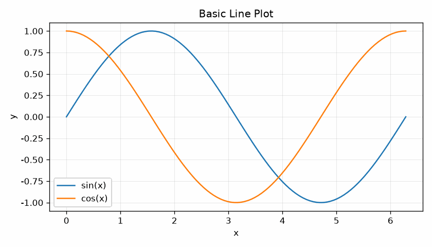
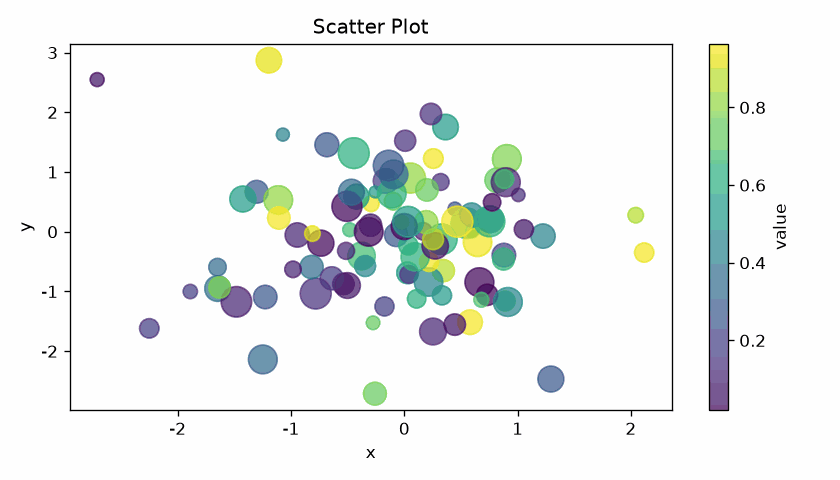
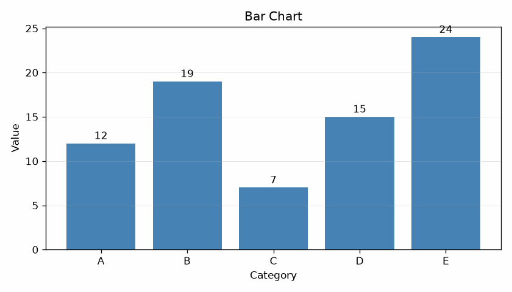
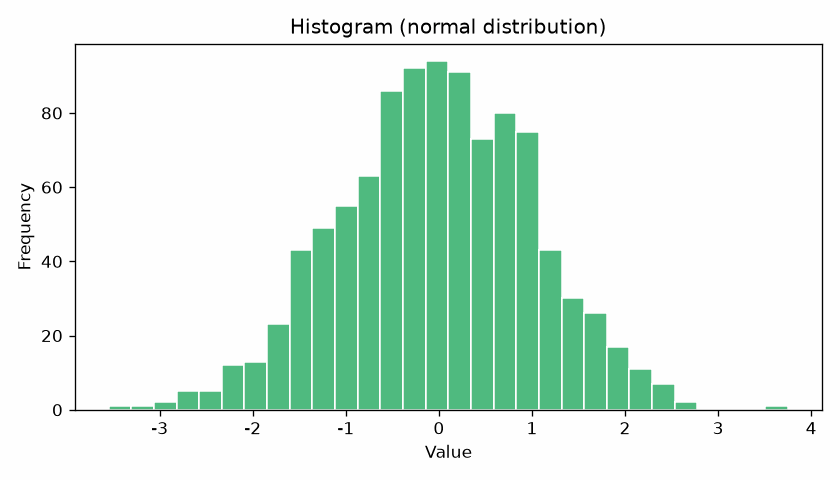
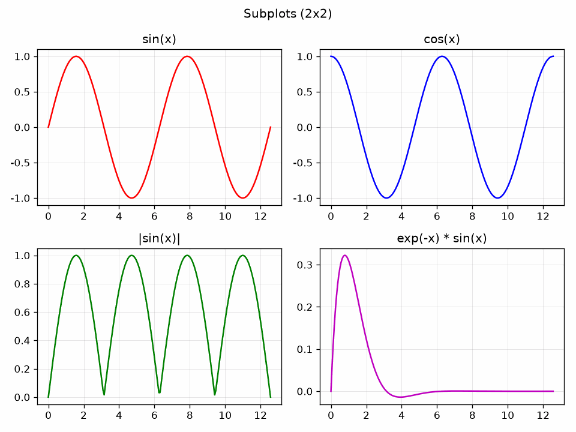
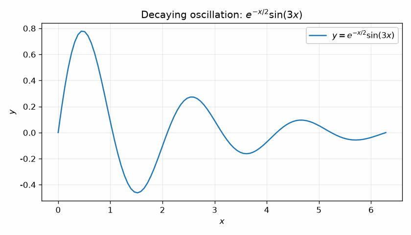

Matplotlib 入门教程
本教程面向 零基础 读者。 Matplotlib 是 Python 里最常用的绘图库，只需几行代码就能画出 折线图、散点图、柱状图、直方图等，还能把图保存成 PNG、PDF、SVG 等格式。 本教程所有插图均用真实代码生成，跟着做就能得到一模一样的结果。
目录
- Matplotlib 是什么
- 安装与环境
- 快速开始：你的第一张图
- 核心概念：Figure 与 Axes
- 常用图表类型
- 美化你的图
- 子图：subplots
- 保存图片
- 文本注释与数学公式
- 全局样式与风格
- 常见问题与技巧
- 下一步学习
1. Matplotlib 是什么
Matplotlib 是 Python 生态中最经典、最通用的二维绘图库，由 John D. Hunter 于 2003 年创建：
- 用面向对象的方式把「数据」画成「图表」，底层基于 NumPy 数组；
- 支持折线图、散点图、柱状图、直方图、饼图、箱线图、等高线等几十种图表；
- 可输出 PNG、PDF、SVG、EPS 等多种格式，适合论文、报告、网页；
- 常配合 NumPy（数据）和 Pandas（表格数据）一起使用。
优点：
- 功能强大、思路贴近「画图」这一本质；
- 是 Pandas 绘图、Seaborn 等高级库的底层引擎；
- 自定义程度极高，几乎能改图上的一切细节。
缺点：
- 新手上手有一点概念门槛（
Figure和Axes的区别）； - 默认样式偏「学术」，想要美观需要自己调。
一句话总结：Matplotlib 让你用 Python 把数据变成图片。
2. 安装与环境
2.1 安装
# 只装 matplotlib
pip install matplotlib
# 推荐：连同 numpy 一起装（数据处理常用）
pip install matplotlib numpy
# 国内网络慢可换镜像源
pip install matplotlib -i https://pypi.tuna.tsinghua.edu.cn/simple
2.2 验证安装
import matplotlib
print(matplotlib.__version__)
3. 快速开始：你的第一张图
下面这段代码画出了正弦 sin(x) 和余弦 cos(x) 两条曲线：
import numpy as np
import matplotlib.pyplot as plt
# 1. 生成数据：0 到 2π 之间的 100 个点
x = np.linspace(0, 2 * np.pi, 100)
y1 = np.sin(x)
y2 = np.cos(x)
# 2. 创建画布和坐标轴（面向对象写法的核心）
fig, ax = plt.subplots(figsize=(7, 4))
# 3. 在 ax 上画两条折线
ax.plot(x, y1, label="sin(x)")
ax.plot(x, y2, label="cos(x)")
# 4. 用 ax 的方法加上标题、坐标轴标签、图例、网格
ax.set_title("Basic Line Plot")
ax.set_xlabel("x")
ax.set_ylabel("y")
ax.legend()
ax.grid(True, alpha=0.3)
# 5. 显示
plt.show()
效果：

最小可运行结构就是四步：造数据 → 创建 fig, ax → 用 ax 画图/修饰 → 显示。其余都是「锦上添花」。
4. 核心概念：Figure 与 Axes
这是 Matplotlib 最重要、也最让新手困惑的一组概念。
| 概念 | 英文 | 比喻 | 说明 |
|---|---|---|---|
| 图（画布） | Figure | 一整张画纸 | 容纳所有内容的大容器，可设置大小 figsize、背景等 |
| 坐标轴（子图） | Axes | 画纸上的一个作图区域 | 真正画数据的地方，可放多个，坐标轴、刻度、标题都在它上面 |
| 轴（线） | Axis | 画区的 x / y 边界线 | 一条坐标轴，包含刻度、刻度标签、轴名 |
plt.plot()这种「快速写法」由 pyplot 自动帮你建一个Figure和一个Axes；- 本教程主要使用面向对象写法：先创建
fig, ax = plt.subplots()，再用ax的方法画图和修饰。
两种写法对比：
# 写法一：pyplot 快速写法（了解即可，适合临时单图）
plt.plot([1, 2, 3], [2, 4, 3])
plt.show()
# 写法二：面向对象写法（推荐，本教程主要使用）
fig, ax = plt.subplots(figsize=(6, 4)) # 返回 (Figure, Axes)
ax.plot([1, 2, 3], [2, 4, 3])
ax.set_title("my plot")
fig.savefig("out.png")
建议：主要使用面向对象写法。先创建
fig, ax，再用ax调用画图和修饰方法； 只有plt.subplots()、plt.show()、plt.style.use()、plt.rcParams等少数步骤还需要通过pyplot完成。
5. 常用图表类型
5.1 折线图
用于看数据随某个变量（通常是 x）的变化趋势。
import numpy as np
import matplotlib.pyplot as plt
x = np.linspace(0, 10, 100)
fig, ax = plt.subplots(figsize=(6, 4))
ax.plot(x, x ** 2, label=r"$y=x^2$")
ax.plot(x, x ** 3, label=r"$y=x^3$")
ax.set_xlabel("x")
ax.set_ylabel("y")
ax.legend()
plt.show()
常用参数（ax.plot）：
| 参数 | 作用 | 例子 |
|---|---|---|
linestyle | 线型 | "-" 实线，"--" 虚线，":" 点线，"-." 点划线 |
linewidth | 线宽 | linewidth=2 |
color | 颜色 | "red"、"tab:blue"、"#1f77b4" |
marker | 数据点标记 | "o" 圆、"s" 方块、"^" 三角、"*" 星号 |
label | 图例名称 | label="sin(x)" |
5.2 散点图
用于看两个变量之间的关系、聚类、分布，常配合颜色和大小表示额外信息。
import numpy as np
import matplotlib.pyplot as plt
rng = np.random.default_rng(1)
x = rng.normal(size=100)
y = rng.normal(size=100)
c = rng.random(100) # 颜色
s = rng.random(100) * 300 + 50 # 大小
fig, ax = plt.subplots(figsize=(7, 5))
sc = ax.scatter(x, y, c=c, s=s, alpha=0.7, cmap="viridis")
fig.colorbar(sc, ax=ax, label="value")
plt.show()
效果（颜色代表数值，颜色条 colorbar 说明含义）：

5.3 柱状图
用于对比不同类别的数值大小。ax.bar 画竖直柱，ax.barh 画水平柱。
import matplotlib.pyplot as plt
names = ["A", "B", "C", "D", "E"]
values = [12, 19, 7, 15, 24]
fig, ax = plt.subplots(figsize=(7, 4.5))
ax.bar(names, values, color="steelblue")
ax.set_xlabel("Category")
ax.set_ylabel("Value")
for i, v in enumerate(values):
ax.text(i, v + 0.5, str(v), ha="center") # 在柱顶标数值
plt.show()
效果：

其他柱状图变体：
| 需求 | 用哪个 |
|---|---|
| 水平柱状图 | ax.barh(y, width) |
| 分组柱状图 | 多次 ax.bar 并调整 x 偏移 |
| 堆叠柱状图 | 多次 ax.bar 并设置 bottom 参数 |
5.4 直方图
用于看数据的分布形状（是否正态、有没有偏斜、有无离群值）。
import numpy as np
import matplotlib.pyplot as plt
data = np.random.default_rng(1).normal(loc=0, scale=1, size=1000)
fig, ax = plt.subplots(figsize=(6, 4))
ax.hist(data, bins=30, color="mediumseagreen", edgecolor="white")
ax.set_xlabel("Value")
ax.set_ylabel("Frequency")
plt.show()
效果：

关键参数：bins 决定柱子的数量/边界，density=True 可把纵轴改为概率密度。
5.5 饼图
用于展示各部分占整体的比例。
labels = ["A", "B", "C", "D"]
sizes = [30, 20, 25, 25]
fig, ax = plt.subplots(figsize=(5, 5))
ax.pie(sizes, labels=labels, autopct="%.1f%%", startangle=90)
ax.axis("equal") # 保证饼是正圆
plt.show()
5.6 箱线图
用于看数据的分布、中位数和离群值，非常适合做数据探索。
import numpy as np
import matplotlib.pyplot as plt
rng = np.random.default_rng(2)
data = [rng.normal(0, 1, 100), rng.normal(2, 1.5, 100), rng.normal(-1, 0.5, 100)]
fig, ax = plt.subplots(figsize=(6, 4))
ax.boxplot(data, labels=["a", "b", "c"])
plt.show()
5.7 其他常用图
| 图表 | 函数（ax 方法） | 用途 |
|---|---|---|
| 误差棒 | ax.errorbar | 展示数据的不确定性 |
| 等高线/热力图 | ax.contourf / ax.imshow | 二维数据分布 |
| 填充图 | ax.fill_between | 两条曲线之间的区域 |
| 矢量场 | ax.quiver | 展示向量场 |
| 极坐标 | plt.subplots(subplot_kw={"projection": "polar"}) 后 ax.plot | 角度数据 |
6. 美化你的图
好的图清楚、美观。这里列出最常用的美化手段。
6.1 标题与坐标轴标签
ax.set_title("标题", fontsize=16)
ax.set_xlabel("x", fontsize=12)
ax.set_ylabel("y", fontsize=12)
也可以把多个设置合并成一行：
ax.set(title="标题", xlabel="x", ylabel="y")
6.2 图例
ax.plot(x, y1, label="线1")
ax.plot(x, y2, label="线2")
ax.legend() # 自动放在合适位置
ax.legend(loc="upper right") # 指定位置
ax.legend(fontsize=10, framealpha=0.5)
loc 常用值：best、upper right、lower left、center 等。
6.3 坐标范围与刻度
ax.set_xlim(0, 10) # x 轴范围
ax.set_ylim(-1, 1) # y 轴范围
ax.set_xticks([0, 5, 10]) # 手动指定刻度位置
ax.tick_params(axis="x", rotation=45) # 旋转刻度标签（防重叠）
ax.set_yscale("log") # y 轴用对数刻度
6.4 颜色、线型与标记
ax.plot(x, y, color="tab:blue", linewidth=2.5,
linestyle="--", marker="o", markersize=4,
label="data")
常用颜色： "r"红、"g"绿、"b"蓝、"k"黑、"orange"、"purple"，
以及 matplotlib 自带的 "tab:10" 配色（tab:blue、tab:orange…）。
也可以用十六进制如 "#1f77b4"。
6.5 网格与边框
ax.grid(True) # 开网格
ax.grid(True, linestyle="--", alpha=0.5) # 虚线、半透明
ax.spines["top"].set_visible(False) # 隐藏上边框
ax.spines["right"].set_visible(False) # 隐藏右边框
fig.tight_layout()能自动调整子图间距，避免标签被切掉，强烈建议每次都加。
7. 子图：subplots
一图放多个小图，适合对比展示多组数据。最常用的是 plt.subplots(m, n)，它返回一个 Figure 和一个 Axes 组成的二维数组。
import numpy as np
import matplotlib.pyplot as plt
x = np.linspace(0, 4 * np.pi, 200)
fig, axes = plt.subplots(2, 2, figsize=(8, 6))
axes[0, 0].plot(x, np.sin(x), "r"); axes[0, 0].set_title("sin(x)")
axes[0, 1].plot(x, np.cos(x), "b"); axes[0, 1].set_title("cos(x)")
axes[1, 0].plot(x, np.abs(np.sin(x)), "g"); axes[1, 0].set_title("|sin(x)|")
axes[1, 1].plot(x, np.exp(-x) * np.sin(x), "m"); axes[1, 1].set_title("exp(-x)*sin(x)")
for ax in axes.ravel(): # 把二维数组展平，统一设置
ax.grid(True, alpha=0.3)
fig.suptitle("Subplots (2x2)") # 整张图的大标题
fig.tight_layout()
plt.show()
效果：

进阶技巧：
| 需求 | 做法 |
|---|---|
| 共享 x 轴 | plt.subplots(2, 1, sharex=True) |
| 不同大小 | fig, axs = plt.subplots(2, 2, gridspec_kw={"height_ratios": [1, 2]}) |
| 精细布局 | 用 plt.subplot2grid 或 fig.add_gridspec |
| 双子坐标轴 | 用 ax.twinx() 在右侧再加一个 y 轴 |
8. 保存图片
保存图用 fig.savefig()，支持非常丰富的格式。一定要放在 plt.show() 之前调用，否则保存的是空图（有些环境 show 会清空画布）。
fig.savefig("plot.png") # PNG，默认 dpi=100
fig.savefig("plot.png", dpi=300) # 高清，适合打印/论文
fig.savefig("plot.pdf") # 矢量图，放大不失真
fig.savefig("plot.svg") # SVG，适合网页
fig.savefig("plot.jpg", bbox_inches="tight") # 自动裁剪空白
注意：
- 用
bbox_inches="tight"可以避免标签被裁剪； - 论文投稿通常用 PDF / EPS / 300dpi 的 PNG；
- 想保存多张图，每画完一张就
fig.savefig(...)再plt.close(fig)释放内存。
9. 文本注释与数学公式
9.1 添加文字
ax.text(x, y, "文字") 在指定坐标写文字，ax.annotate() 可加箭头。
ax.text(2, 0.5, "注释文字", fontsize=12, color="red")
ax.annotate("峰值", xy=(np.pi / 2, 1), xytext=(2.5, 1.2),
arrowprops=dict(arrowstyle="->"))
9.2 数学公式（mathtext）
在标签字符串里用 $...$ 就能写 LaTeX 风格的数学公式，无需额外安装任何东西。
fig, ax = plt.subplots(figsize=(7, 4))
ax.plot(x, np.exp(-x / 2) * np.sin(3 * x), label=r"$y=e^{-x/2}\sin(3x)$")
ax.set_xlabel(r"$x$")
ax.set_ylabel(r"$y$")
ax.set_title(r"Decaying oscillation: $e^{-x/2}\sin(3x)$")
ax.legend()
效果（标题和图的公式都用上了 mathtext）：

常用写法：
| 想要的效果 | 写法 |
|---|---|
| 上标 | x^2、e^{-x} |
| 下标 | x_1 |
| 分数 | \frac{a}{b} |
| 根号 | \sqrt{x} |
| 希腊字母 | \alpha、\beta、\pi、\theta |
| 求和 | \sum_{i=1}^{n} |
| 积分 | \int_0^1 |
| 函数名 | \sin、\cos、\log |
提示：字符串前加
r（如r"$...$"）表示原始字符串，可避免反斜杠被转义。
10. 全局样式与风格
10.1 主题风格
Matplotlib 内置多种整体风格，一条命令切换：
import matplotlib.pyplot as plt
plt.style.use("seaborn-v0_8") # 更现代、更柔和
plt.style.use("ggplot") # 类似 R 的 ggplot 风格
plt.style.use("dark_background") # 深色背景
plt.style.use("bmh") # 蓝色主题
风格是全局设置，所以仍然通过
plt.style.use()调用；设置完后， 面向对象写法里的ax会自动使用该风格。
查看所有风格：print(plt.style.available)。
10.2 rcParams 全局配置
plt.rcParams 可以设置全局默认，省去每个图都重写一遍（全局配置同样在 pyplot 层完成）。
plt.rcParams["figure.figsize"] = (8, 5)
plt.rcParams["font.family"] = "sans-serif"
plt.rcParams["font.sans-serif"] = ["SimHei", "DejaVu Sans"] # 中文字体
plt.rcParams["axes.unicode_minus"] = False # 正常显示负号
plt.rcParams["lines.linewidth"] = 2
关于中文：Matplotlib 默认字体不含中文，直接画中文会显示成方框。 解决办法是设置一个中文字体（如
SimHei、Noto Sans CJK SC）。 若你的系统没有中文字体，最简单是先用英文标签。
10.3 默认配色（tab10）
新版 matplotlib 默认用一套对色盲友好、同一色系不同深浅的 tab 配色，
一组曲线时自动轮换，不用手动指定，效果也足够好。
11. 常见问题与技巧
11.1 图没显示/一下闪过
- Jupyter 里请加
%matplotlib inline； - 普通脚本在
plt.show()后会阻塞窗口，关闭即可继续； - 无界面环境用
matplotlib.use("Agg")+fig.savefig(...)。
11.2 中文变方框
import matplotlib.pyplot as plt
plt.rcParams["font.sans-serif"] = ["SimHei", "Microsoft YaHei", "Noto Sans CJK SC"]
plt.rcParams["axes.unicode_minus"] = False
11.3 画布太挤、标签重叠
fig.tight_layout()
# 或
fig.subplots_adjust(top=0.9, right=0.95, hspace=0.3)
11.4 让某条线更突出
调整 zorder（图层顺序）或直接在后面重新画一次。
ax.plot(x, y, "b--", zorder=1)
ax.plot(x[::5], y[::5], "ro", zorder=2) # 点画在线上层
11.5 用 Pandas 一键出图
如果数据是 DataFrame，可以直接：
df.plot(kind="line") # 折线
df.plot(kind="bar") # 柱状
df.plot(kind="scatter", x="a", y="b")
df["col"].hist() # 某列的直方图
11.6 常用快捷键（面向对象写法速查）
| 想做的事 | 写法 |
|---|---|
| 设标题/轴标签 | ax.set(title=..., xlabel=..., ylabel=...) |
| 设范围 | ax.set_xlim(...)、ax.set_ylim(...) |
| 加网格 | ax.grid(True) |
| 加图例 | ax.legend() |
| 保存 | fig.savefig(...) |
12. 下一步学习
12.1 练习建议
- 把第 3 节的第一个例子跑起来，改成画
x^3并加上标记； - 生成一组随机数，画它的直方图，并试试不同
bins； - 做一个 2x2 子图，展示正弦、余弦、正切和它们的平方；
- 用面向对象写法（
ax.pie）画出你一天时间分配的占比； - 试着用
fig.savefig导出一张 300dpi 的图，并加bbox_inches="tight"。
12.2 进阶方向
| 方向 | 说明 | 库 |
|---|---|---|
| 统计图表 | 更省事的高级绘图 | Seaborn（基于 matplotlib） |
| 交互式图表 | 可缩放、悬停看数据 | Plotly、Bokeh |
| 动态图表 | 动画/实时更新 | matplotlib.animation |
| 3D 绘图 | 三维曲面/散点 | mpl_toolkits.mplot3d |
| 地理数据 | 地图可视化 | GeoPandas / Cartopy |
12.3 官方资源
- 官方文档：https://matplotlib.org/stable/
- 官方教程：https://matplotlib.org/stable/tutorials/index.html
- 画廊（大量示例，直接复制改）：https://matplotlib.org/stable/gallery/
附录：一张图从 0 到 1 的标准模板
把下面代码保存为 demo.py，替换数据即可直接用：
import numpy as np
import matplotlib.pyplot as plt
# —— 数据 ——
x = np.linspace(0, 10, 100)
y = np.sin(x) * np.exp(-x / 5)
# —— 画图 ——
fig, ax = plt.subplots(figsize=(7, 4))
ax.plot(x, y, label=r"$y=e^{-x/5}\sin(x)$", color="tab:blue", linewidth=2)
# —— 修饰 ——
ax.set(title="My Plot", xlabel="x", ylabel="y")
ax.grid(True, linestyle="--", alpha=0.5)
ax.legend()
# —— 保存与显示 ——
fig.tight_layout()
fig.savefig("demo.png", dpi=300, bbox_inches="tight")
plt.show()
快速记忆卡
造数据 : numpy 的 linspace / random
创建画布 : fig, ax = plt.subplots(figsize=...)
画折线 : ax.plot(x, y, label=...)
画散点 : ax.scatter(x, y, c=..., s=...)
画柱状 : ax.bar(x, height)
画直方图 : ax.hist(data, bins=30)
画饼图 : ax.pie(sizes, labels=...)
子图 : fig, axes = plt.subplots(rows, cols)
标题/标签 : ax.set_title / ax.set_xlabel / ax.set_ylabel
图例 : ax.legend(loc=...)
范围/刻度 : ax.set_xlim / ax.set_ylim / ax.set_xticks
网格 : ax.grid(True)
数学公式 : 标签里写 r"$...$"
保存 : fig.savefig(...)
布局 : fig.tight_layout()
显示 : plt.show()
祝你画图愉快，让数据自己说话！